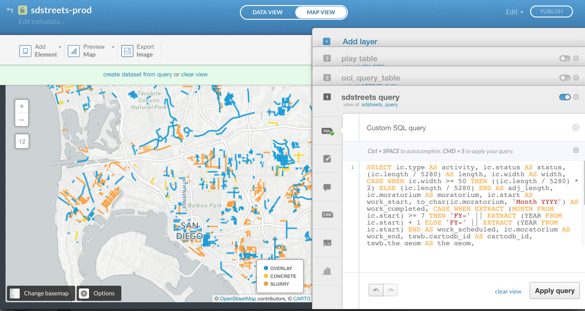
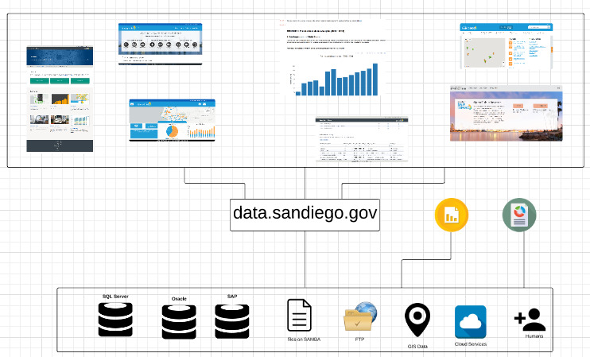
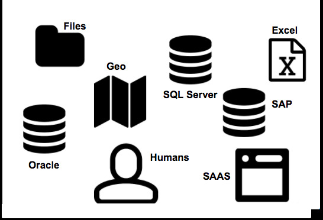
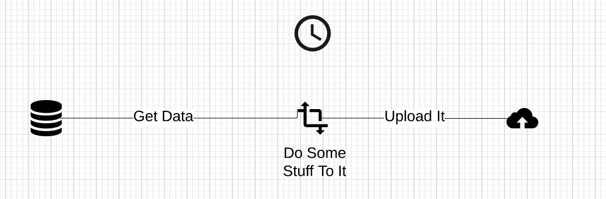
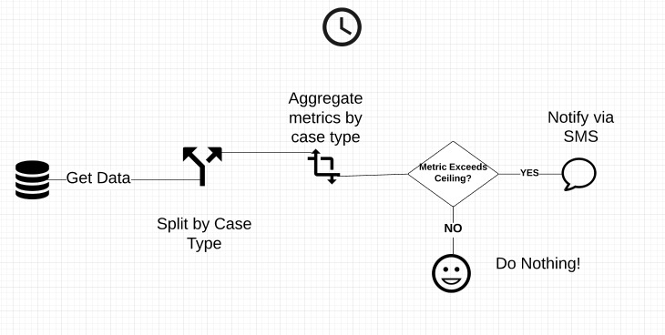

Be honest. When you read the words data automation you get a sudden rush of melatonin to your brain, your eyelids get heavy, and you get an uncontrollable urge to fall asleep. Don’t be ashamed; you are reacting to these words in a similar manner to 99.5% of people on the planet. Bear with me though for just a few paragraphs while I try to explain why it matters, and how we do it here at the City of San Diego.
Before we get started, let me promise to not use any of the following:
One of the best case studies to make obvious the benefits of data automation is StreetsSD. We started working on this project with the City’s Transportation and Stormwater Department (TSW). They asked us to build a map of paving projects. We got a spreadsheet of data from the department, loaded it into our mapping tool and wrote some code. Boom, we had a map.

Most web maps, charts, and data visualizations you see in newspapers, and even those created by a lot of cities, usually stop there. That’s actually OK because a lot of these things don’t need to be updated automatically. However, the goal of StreetsSD is to provide an up-to-date status of work to city employees and residents. Keeping the map updated is important.
The typical City approach in these situations is to have someone “run a report” and upload it somewhere to update the map. Most of the time, “running a report” actually means this:
This approach inherently has several problems:
Needless to say, this sucks. And even though we’re creating a great operational tool, we’re costing people time and risking the release of wrong information.
At this point, being the wise reader you are, you might be thinking that the outcome would definitely be worth the cost in the case of just one map. To which I’ll respond with:

This is not a problem with just one map. It would occur with any dataset we provide as open data on the portal, anything we build on top of those datasets, and any internal or external reports we regularly generate. Therefore, this is a problem that needs to be solved at a systemic level.
Our philosophy has always been to let machines do what they do best - updating data, re-running things, keeping track of things - and humans do what they do best - making those fuzzy decisions that only our brains can.
We needed a flexible and extensible solution that could scale across the organization as a whole.

We turned to an open source project called Airflow. It has become the tool of choice for Spotify, IFTTT, Lyft, AirBnB and many others for solving this exact set of problems. Airflow has several advantages:
We called our Airflow deployment Poseidon because codenames are cool, San Diego is on the Ocean, and Poseidon rules the sea. Plus, we get to use images like these:
The basic idea of Poseidon is this:

Simple, right?
We’re now doing this for all of our datasets (way harder to implement than explain). This means we’re also doing it for everything built on top of our data, such as StreetsSD, the portal, and various other visualizations.
Now you’re probably thinking: whoop-de-doo, I’m a resident and I don’t know data, so I really don’t care that you now have automated data.
We know. That’s why we pushed it further.
Look back at the diagram above. Those are just dependent pieces that run in a defined cycle. What if we flipped out some of those pieces and got this?

Automated data is now starting to get interesting. Because of Poseidon’s flexibility, and the fact that it’s just a bunch of coordinated tasks, we can send automatic notifications, alerts based on thresholds, and all kinds of other cool stuff that would never have been possible without automation.
But if I told you what we were planning next, I’d ruin the surprise. You’ll just have to wait and see.